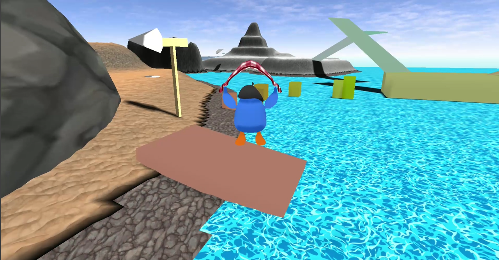

Welcome to Manchot's First Flight, a semi open world, 3D platforming game made by a team of eight Cal Poly students that uses graphical technologies and custom made mechanics. On this site, we will walk you through the development process and what technologies we used for the game. 